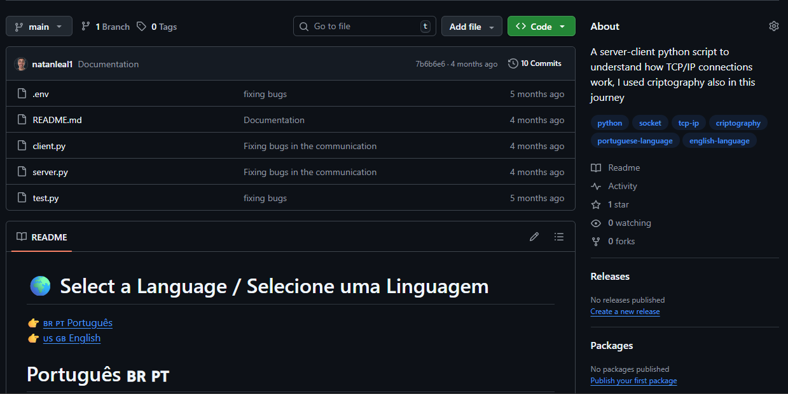

Projetos em Destaque
Alguns dos projetos práticos e pesquisas desenvolvidas com minha stack de tecnologias.
FinanceAI
Plataforma de finanças pessoais desenvolvida para o hackathon da Oracle em parceria com a No Country, reunindo gestão de transações, análise financeira, machine learning e a assistente de IA Fai.
Ver Projeto no GitHub
Projeto Servidor-Cliente (Crypto)
Aplicação em Python explorando comunicação de rede por sockets TCP/UDP e criptografia de mensagens entre cliente e servidor.
Ver Código no GitHub